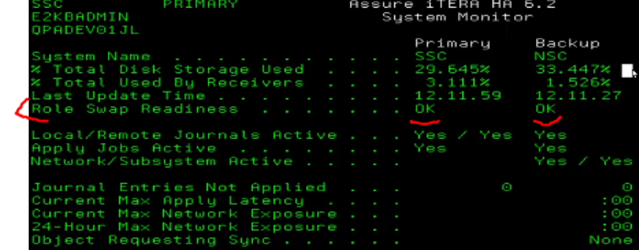
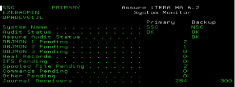
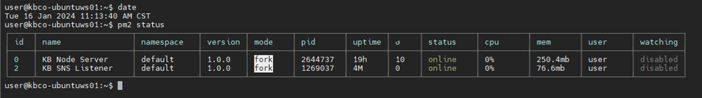

In this section we will find the step-by-step of how to do the Role Swap Script
Day before role swap
1. Contact vendor (Fortra) for temp license keys for HA.
2. Verify Audits are clean.
3. Setup roll time with dispatch – drivers.
4. Review all scheduled jobs – on primary and backup.
5. Open case with iTera to inform of role swap intention.
6. Contact WEX and update the IP address. The email address to contact is EFSWEX-as400support@wexinc.com. They will need the internal address of either 10.12.12.151 (NSC) or 10.0.0.203 (SSC).
2 to 3 hours before role swap
1. Verify audits are clean: WRKAUD
2. Verify role swap readiness on primary
a. 1.1 → F10 → F14
b. Everything should show “ok” or “yes”


3. Configure sessions to use QCTL subsystem for both primary and backup.
a. Change Mochasoft or ACS device ID to configured name (conskb, conskyle, consrc, etc.)
4. Check audits and disable them.
a. On backup – WRKAUD → F16 → F9
i. In the “automatic audit recovery” field, type *DISABLED
5. Review iTera managed triggers.
a. 4.23 → Primary should be enabled, backup should be disabled
6. Review iTera managed constraints.
a. 4.24 → Primary should be enabled, backup should be disabled
7. Non-mirrored object check.
a. Primary 4.30 → Verify all required objects are replicated
i. Check “Last Sync Date” field
1. End job scheduler on primary
a. In command line, type endjs
i. Check: type go js → 5 → 11 → Look at the “Status” field
2. End subsystems
a. In command line, type wrksbs
b. List (place a 4 next to each one):
i. ADM, COMDATA, DMI, EDISBS, EFWD, ITCDIAMOND, ITSSBS, etc.
c. Before hitting Enter:
i. In command line, type option(*immed), then Enter
3. End HTTP Server: In command line, type ENDTCPSVR *HTTP
4. Stop Eleos Apache process
5. Stop Travis Dashboard web stuff
a. SSH to kbco-ubuntuws01/dashboard.kbtransportation.com
i. Login: "user", password in Keepass
b. On the command line, type "date" and hit Enter
c. On the command line, type pm2 status
i. Look for "KB Node Server" in the "name" column and note the corresponding "id"

d. On the command line, type pm2 stop # --- where # is the process id # above --- example: pm2 stop 0
6. End QINTER: In command line, type endsbs qinter option(*immed)
7. End QBATCH: In command line, type endsbs qbatch option(*immed)
8. End specific QUSRWRK jobs
a. Go to active jobs: wrkactjob sbs(QUSRWRK), then end all processes that match:
i. QZDASOINIT, QZRCSRVS
9. Change AS400.kbtransportation.com DNS entry
10. Sync exclusively locked objects: 40.24 → F10: sync roll request
11. Check objects requesting sync: 1.1 → F6 → If nothing there, continue
12. Verify system is quiet: 40.22 → F7: refresh → look for 0 new objects
13. Verify system is caught up: 1.4 → “Present delay” should be less than 10
14. Verify spool file is caught up: 1.6 → “to be processed” is zero
15. Final Check: 40.25 → F10 → All looks good
Post Role Swap
1. End Itera for backup: ITE2KB/E2ENDSBS
2. Log on to new Primary with normal User ID and open ICC databases
3. Start subsystems as normal user: 1 → 3 → 18 → 5
4. Start Eleos Apache process
5. Start Travis Dashboard web stuff: pm2 start #
Day After Role Swap
1. Re-enable QINTER on the new backup box
2. Check system monitor: 1.1
3. Check audits: WRKAUD → F16 → F9 → Enable audit recovery